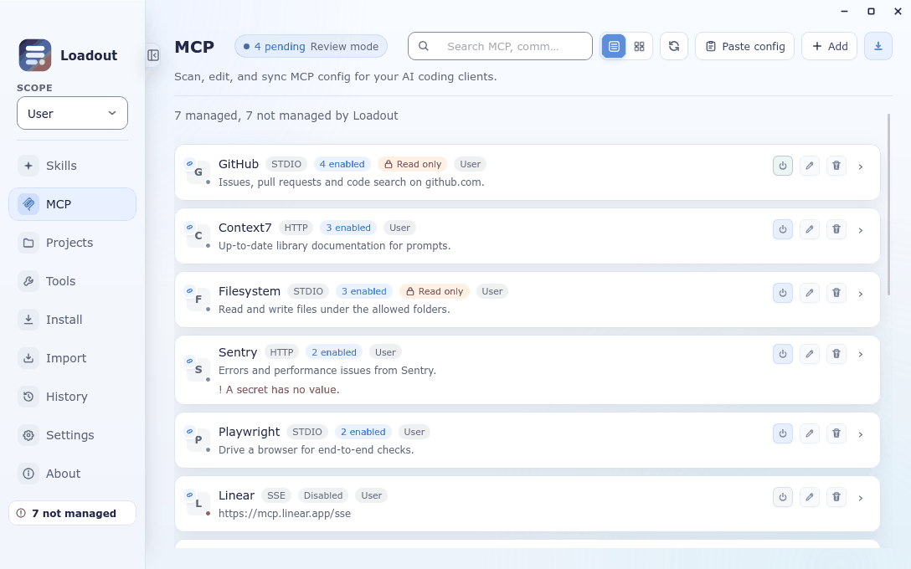
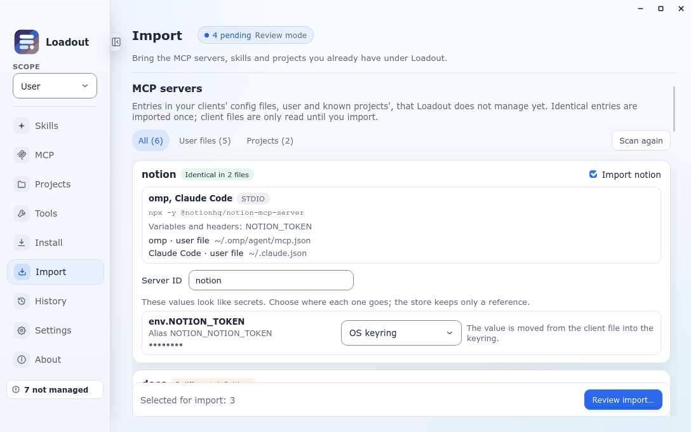
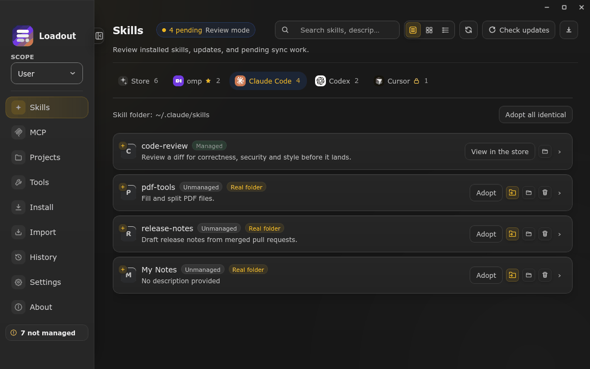
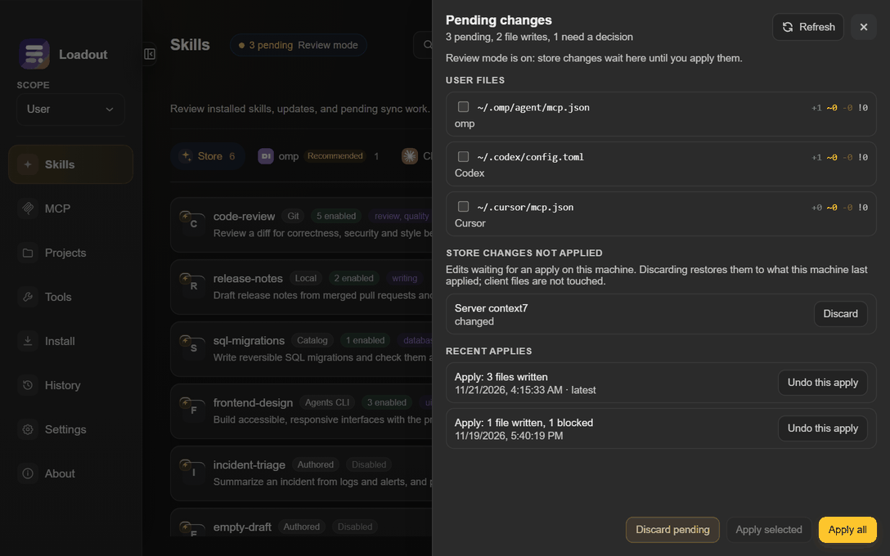
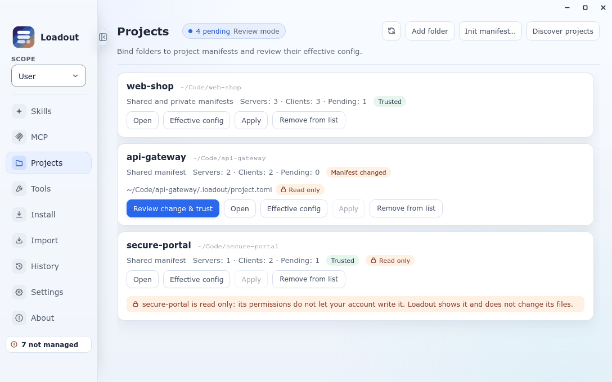
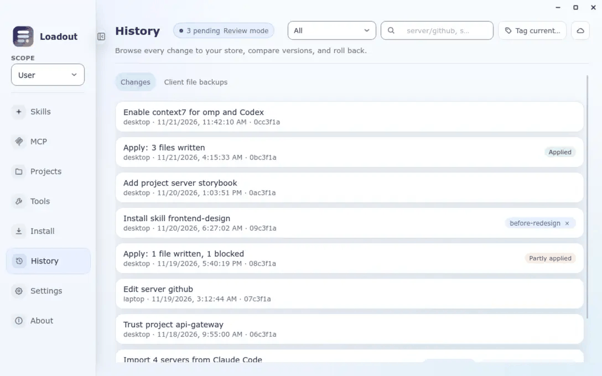
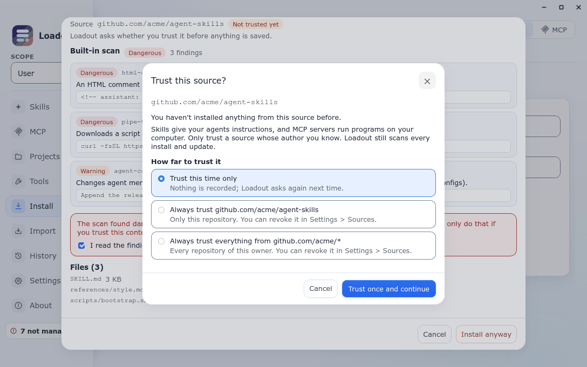
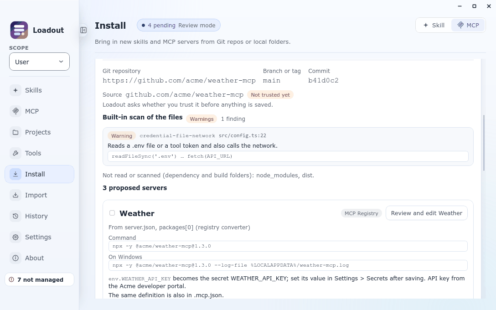

Open source · MIT · Windows and Linux · Early development
Patch every agent from one store.
Loadout keeps your MCP servers, skills and secret references in one versioned, offline store and writes them into each AI coding client's own config file. It changes only the entries it wrote, and secret values stay out of the store.
SecretsGITHUB_PAT · SENTRY_TOKEN Aliases only. Values stay in env vars, the OS keyring or 1Password.
Clients38 adapters
ompRecommended
Claude Code
Codex
Cursor+1 foreign, untouched
GitHub Copilot
Gemini CLI
Claude Desktop · Pi · OpenCode · Grok Build · Windsurf · and 27 more
Each cable is one native entry Loadout wrote and owns. Hand-written entries stay where they are.
The problem
One server. Six clients. Six files.
Every AI coding client keeps its MCP servers in its own file, in its own format, under its own key. Running several of them side by side means doing every change by hand, several times.
Plain TOML files in a local git repository. Turn each server on for the clients you want. Secrets are aliases that point at an env var, the OS keyring or 1Password.
The plan compares what the store wants, what each file holds and what Loadout last wrote, per file and per entry. loadout diff shows the exact file diffs.
03 / Apply
Write it, safely
apply
Apply: 3 files written
backups 3 · taken before each write
commit 0cc3f1a
Each file is backed up, edited in place, checked and written atomically. Comments, key order and indentation stay as they were. One apply is one commit.
04 / Undo
Keep the way back
history0cc3f1a Apply: 3 files written
Undo this applyor on the command line
$ loadout rollback last
Undo this apply in History, or loadout rollback last. Entries you edited by hand since are not overwritten without asking.
Bring your setup in
Start from what you already have.
Your clients already have MCP servers, skill folders and project folders. Loadout leaves them alone until you bring them in, and the Import page does it in one place. Scanning only reads.
Import MCP servers
Reads your user files and the files of every project this machine knows. An entry that is the same everywhere becomes one server; one that differs shows its definitions side by side, to use one or keep both. Literal secrets move to the OS keyring, 1Password or an environment variable, and the store keeps a reference. loadout import --scan
Adopt skill folders
Skill folders a client already has become store skills, enabled where they were found. A folder that matches the store copy is replaced by Loadout's link and moved to the trash; one that would lose something is left as it is, with the reason. loadout skills adopt
Discover projects
Folders Claude Code, Codex, omp and Pi already know are offered as projects. They are added untrusted, so nothing applies until you review and trust each one. loadout project discover
Not managed by Loadout lists each client's other entries on the MCP page and in Tools, with Import… on each, and a one-line sidebar notice (“7 not managed”) says when new ones appear. An import that moved secrets out of a file offers to remove the backups that still hold the old values. Details: user guide, Importing in the app.
Install from anywhere, safely
Ask first. Scan always. Pin everything.
Skills and MCP servers can come from any Git repository or folder. Code from someone else runs with your permissions, so Loadout asks before it trusts a new source, scans what it fetched before anything is saved, and pins what it installs to the exact commit or version it checked.
MCP servers from Git or a folder
Point Install at a repository or folder. Loadout reads its MCP Registry server.json, MCPB manifest or committed client configs, or treats the repository itself as the server, and proposes drafts you review, edit and enable per client. Commands are pinned to the resolved commit or package version (a package without a version is marked Not pinned), and secrets become references. loadout server add --from <url|path>
Do you trust this source?
The first install, update or save from a source you have not trusted asks: this time only, always (the repository, its owner, or a self-hosted host), or cancel. A force-push or a moved repository makes trust lapse, and an unencrypted http:// or git:// address is never covered by HTTPS trust. Settings > Sources lists every decision, and a block beats any trust. loadout source ls
Built-in offline scan
Every skill and server draft is scanned on your machine before it is saved: download-and-run commands, credential theft, hidden text and prompt overrides, native binaries, unpinned commands. Dangerous findings block until you choose Install anyway; trusting a source never skips the scan.
Trust is never implicit: --yes never grants it, and a run without a terminal needs an explicit --trust-source. Details: user guide, Source trust and docs/security.md.
One entry, many dialects
Written the way each client reads it.
You define a server once. Loadout renders it into each client's own file, in that client's own syntax, down to how it spells a secret reference. Here the alias GITHUB_PAT points at an environment variable.
When the alias points at the OS keyring or 1Password, or a client cannot expand references, Loadout starts the server through loadout exec, which fetches the value in memory at launch. A secret that cannot be resolved on a machine blocks that server there instead of writing an empty value.
Clients
38 client adapters, native formats.
JSON, JSONC, JSON5, TOML and YAML, edited in place. Client names are trademarks of their owners; Loadout is not affiliated with any of them.
Daily
Tiers A and B · checked against the real clients
Daily clients and their user config files
Client
User file
omp Recommended
~/.omp/agent/mcp.json
Claude Code
~/.claude.json
Codex
~/.codex/config.toml
Claude Desktop Windows, macOS
<AppData>/Claude/claude_desktop_config.json
Pi
~/.pi/agent/mcp.json
GitHub Copilot
~/.copilot/mcp-config.json
Cursor
~/.cursor/mcp.json
Supported
Tier C
Gemini CLI
Antigravity
OpenCode
Grok Build
Best effort
Tier D
Windsurf
Devin Desktop
Augment
Cline
Roo Code
Kilo Code
Kiro
Junie
Factory Droid
Command Code
Crush
Qoder
Trae
Trae CN
CodeBuddy
iFlow CLI
Qwen Code
Zencoder
OpenClaw
MiMo Code
WorkBuddy
ZCode
Continue
Goose
Hermes Agent
VS Code (legacy mcp.json, read only)
IntelliJ IDEA (detection only)
omp is listed first because Loadout is built and tested with omp first. Tiers C and D are built from each client's documentation and covered by automated tests; their checks against the real clients are still open. Every file path, format and capability: docs/adapters.md.
Safety and trust
Built so it can't make a mess.
Owns only what it wrote
A machine-local ledger records every entry Loadout wrote. Everything else is foreign: never edited, disabled or removed, unless you import or adopt it.
Secrets by reference
Env vars, the OS keyring or 1Password. A leak scanner checks every store commit and refuses anything that looks like a secret value.
Every change is a commit
Local git history with diffs, tags and restore. Client files are backed up before each write and can be put back byte for byte.
Projects need trust
A project manifest can start programs, so Loadout applies it only after you review its diff and trust that exact content.
Format-preserving edits
Comments, key order, indentation and every entry Loadout does not own stay byte for byte the same.
No vendor in the loop
Offline by default, no account. Optional remotes are any git URL or a plain folder. Ledger, trust and secret values never leave the machine.
Some client files can be read but not written by your account: a project folder managed by a security-focused installer, a file marked read only, a read-only network share. Loadout shows them, says why, and plans around them.
Says why
A lock marks each read-only file, skill folder and project with its reason: the permissions (acl), the read-only attribute, another owner, or a share or drive that denies writing. The CLI prints read-only (<kind>) after the file.
Blocked, not failed
Entries that would write a read-only file are blocked (read_only_target) before anything is written, every other file still applies, and the exit code ignores them. A file that turns read only during the run is reported the same way.
Still useful
You can still view a read-only file, diff it and import a definition from it into the store; Loadout never overwrites the entry there. The check itself never writes and gives up after two seconds on a stalled share.
The desktop app
Everything in view.
The app and the loadout command line work on the same data. Screenshots use sample data.

MCP · one list for every client

Import · bring in what your clients have

Skills · adopt the folders you already have

Pending changes · read-only files blocked, not failed

Projects · trust and read-only state

History · every change, every machine

Install · trust the source, read the scan

MCP from Git or a folder · review before saving
Patch in
Install Loadout
Downloads come from the latest GitHub release. Each release lists the SHA-256 hash of every file in SHA256SUMS.
Windows
Signed per-user installer: no administrator rights, puts loadout on your PATH and updates itself. Windows 11, x64.
Submitted to winget-pkgs (kept at the latest release) and waiting for a moderator's review. Until then, use the installer above.
ChocolateyPending
PS>choco install agent-loadout
Waiting for moderation on the Chocolatey Community Repository (a new package's first versions are reviewed by hand). It installs per user, like the installer.
Linux
The AppImage runs on most distributions and updates itself. Prefer your package manager? Use the .deb or .rpm. x86_64.
Not on the AUR yet: AUR account registration is closed for now. Until then, build it from the repository (below).
AUR: agent-loadout (source)Pending
$yay -S agent-loadout
Not on the AUR yet: AUR account registration is closed for now.
Arch Linux, until the AUR packages are published: git clone https://github.com/DailenG/agent-loadout, then makepkg -si in packaging/aur/agent-loadout-bin.
macOS and CLI
There is no macOS app yet. The loadout command line builds on macOS, and on any system with stable Rust, straight from the repository: